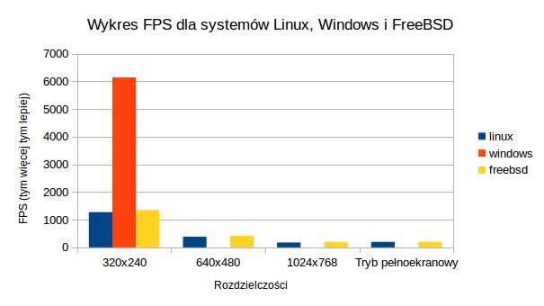
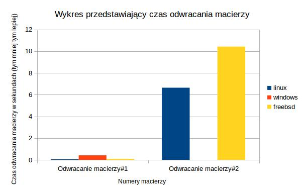
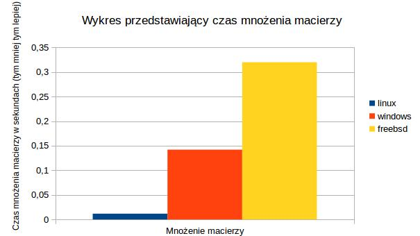

Spis treści
Grafika - test glmark2
Wstęp
Glmark2 jest to program do testowania wydajności renderowania grafiki na danym sprzęcie i systemie. Program bada ile system jest w stanie wyrenderować klatek na sekundę w kilkunastu różnych testach oraz w pojedynczym teście jest pokazuje czas wyrenderowania jednej klatki. Program zwraca średnią arytmetyczną klatek na sekundę wszystkich wykonanych testów.
Procedura testowa
Program glmark2 jest uruchamiany 2 razy. Raz w trybie okna dla rozdzielczości 640x480 oraz drugi raz w trybie pełnoekranowym. Opcje:
- -f plik - oznacza by glmark2 wykonał wszystkie testy, które zostałypodane w tym pliku oraz żeby policzył z nich średnią liczbę klatek na sekundę.
- -s WxH - uruchamia testy w trybie okna o rozmiarach W i H
Raport dla systemu Linux
Wyniki ogólne
| Tryb pełnoekranowy | Tryb okna | |
|---|---|---|
| Średnia arytmetyczna | 174 | 894 |
| Odchylenie standardowe | 22 | 66 |
| Wartość maksymalna | 185 | 975 |
| Wartość minimalna | 123 | 790 |
Tabela - wyniki szczegółowe
| Tryb pełnoekranowy | Tryb okna | |
|---|---|---|
| labc192 | 180 | 790 |
| labc193 | 123 | 975 |
| labc194 | 183 | 915 |
| labc195 | 183 | 891 |
| labc197 | 184 | 894 |
| labc198 | 185 | 965 |
| labc199 | 184 | 832 |
Podsumowanie
Najgorzej wypadł komputer labc192, a najlepiej komputer labc198.
Grafika - test glxgears
Wstęp
Glxgears jest to program do testowania wydajności renderowania grafiki na danym sprzęcie i systemie. Jest on dołączany z otwartoźródłowymi sterownikami do karty graficznej(mesa). Program wyświetla animacje na której poruszają się 3 koła zębate i co 5 sekund mierzy ilość wygenerowanych w tym czasie klatek oraz liczbę klatek na sekundę. Testy będą uruchamiane na systemach Linux, BSD i Windows.
Procedura testowa
Będą uruchomione 4 testy. Każdy z nich będzie trwał 10 sek. Testy będą kolejno uruchamiane w trybie okna dla rozdzielczości 320x240, 640x480, 1024x768 oraz trybie pełnoekranowym w systemie Linux i BSD. Na Windows będzie uruchamiany tylko w oknie o rozdzielczości 320x240. Opcje:
- -fullscreen - uruchamia program w trybie pełnoekranowym
- -geometry WxH - uruchamia program w trybie okna on rozmiarach W i H
Raport dla systemu Linux
| 320x240 | 640x480 | 1024x768 | Tryb pełnoekranowy | |
|---|---|---|---|---|
| Średnia arytmetyczna | 1239 | 451 | 166 | 195 |
| Odchylenie standardowe | 267 | 97 | 33 | 16 |
| Wartość maksymalna | 1670 | 591 | 226 | 221 |
| Wartość minimalna | 908 | 310 | 127 | 177 |
Szczegółowe wyniki
| 320x240 | 640x480 | 1024x768 | Tryb pełnoekranowy | |
|---|---|---|---|---|
| labc192 | 1007 | 376 | 171 | 177 |
| labc193 | 1362 | 591 | 147 | 221 |
| labc194 | 1368 | 456 | 127 | 216 |
| labc195 | 908 | 310 | 189 | 186 |
| labc197 | 1670 | 543 | 137 | 193 |
| labc198 | 1327 | 482 | 166 | 188 |
| labc199 | 1035 | 405 | 226 | 186 |
Podsumowanie
Najgorzej wypadł komputer labc195, a najlepiej komputer labc193.
Raport dla systemu FreeBSD
| 320x240 | 640x480 | 1024x768 | Tryb pełnoekranowy | |
|---|---|---|---|---|
| Średnia arytmetyczna | 1346 | 423 | 189 | 199 |
| Odchylenie standardowe | 338 | 146 | 47 | 35 |
| Wartość maksymalna | 1786 | 551 | 235 | 234 |
| Wartość minimalna | 985 | 265 | 135 | 160 |
Szczegółowe wyniki
| 320x240 | 640x480 | 1024x768 | Tryb pełnoekranowy | |
|---|---|---|---|---|
| labc192 | 1786 | 529 | 210 | 223 |
| labc193 | 985 | 265 | 135 | 160 |
| labc194 | 1001 | 265 | 144 | 167 |
| labc195 | 1005 | 270 | 140 | 160 |
| labc197 | 1549 | 533 | 227 | 219 |
| labc198 | 1527 | 551 | 234 | 234 |
| labc199 | 1575 | 548 | 235 | 232 |
Podsumowanie
Źle wypadł komputer labc193, który wypadł najgorzej aż w 3 róznych testach. Najlepiej wyszedł komputer labc198, który dobrze wypadł w 2 testach, a w innych niewiele mu brakowało tego żeby być najlepszym.
Raport dla systemu Windows
| 320x240 | |
|---|---|
| Średnia arytmetyczna | 6143 |
| Odchylenie standardowe | 562 |
| Wartość maksymalna | 6707 |
| Wartość minimalna | 5068 |
Szczegółowe wyniki
| 320x240 | |
|---|---|
| labc192 | 5788 |
| labc193 | 6493 |
| labc194 | 5068 |
| labc195 | 6091 |
| labc197 | 6361 |
| labc198 | 6707 |
| labc199 | 6494 |
Podsumowanie
Najgorzej wypadł komputer labc194, a najlepiej komputer labc198.
Podsumowanie kilku systemów
Wykres

Podsumowanie
Z wykresu można zauważyć, że na systemach Linux i FreeBSD wyniki są podobne. Na systemie Windows wynik jest 3 razy ponieważ implementacja tego programu się może różnić od implementacji na systemach unix. Program na system windows nie miał możliwości ustawienia rozmiaru okna czy trybu pełnoekranowego.
Obliczenia - test odwracania macierzy
Wstęp
W testach będzie badany czas wykonywania się procedury odwracania macierzy. Do testów zostały wykorzystane macierze, zapisane w postaci matrix market. Program ten wykorzystuje biblioteki m. in. scipy oraz numpy. W scipy zawarte są procedury odwracania i mnożenia macierzy. Numpy, która pozwala tworzyć macierze oraz wykonywać efektywnie operacje na nich. Testy zostaną przeprowadzone na systemach Linux, BSD i Windows.
Procedura testowa
Będą uruchamiane 2 testy. Program przyjmuje jako parametr macierze na których będzie wykonywać obliczenia. Na systemach Linux i BSD będą odwrócone dwie macierze. Na systemie Windows będzie odwrócona jedna macierz.
Raport dla systemu Linux
| Odwracanie macierzy#1 (w sek) | Odwracanie macierzy#2 (w sek) | |
|---|---|---|
| Średnia arytmetyczna | 0,0597 | 6,641 |
| Odchylenie standardowe | 0,0262 | 0,233 |
| Wartość maksymalna | 0,1 | 7,039 |
| Wartość minimalna | 0,04 | 6,447 |
Szczegółowe wyniki
| Odwracanie macierzy#1 (w sek) | Odwracanie macierzy#2 (w sek) | |
|---|---|---|
| labc192 | 0,1 | 6,904 |
| labc193 | 0,04 | 7,039 |
| labc194 | 0,044 | 6,447 |
| labc195 | 0,096 | 6,466 |
| labc197 | 0,046 | 6,599 |
| labc198 | 0,047 | 6,522 |
| labc199 | 0,045 | 6,515 |
Podsumowanie
Najgorzej wypadł komputer labc192, a najlepiej komputer labc194.
Raport dla systemu FreeBSD
| Odwracanie macierzy#1 (w sek) | Odwracanie macierzy#2 (w sek) | |
|---|---|---|
| Średnia arytmetyczna | 0,096 | 10,421 |
| Odchylenie standardowe | 0,016 | 2,251 |
| Wartość maksymalna | 0,125 | 13,022 |
| Wartość minimalna | 0,079 | 8,367 |
Szczegółowe wyniki
| Odwracanie macierzy#1 (w sek) | Odwracanie macierzy#2 (w sek) | |
|---|---|---|
| labc192 | 0,125 | 8,367 |
| labc193 | 0,08 | 8,716 |
| labc194 | 0,079 | 8,663 |
| labc195 | 0,085 | 8,741 |
| labc197 | 0,105 | 13,02 |
| labc198 | 0,102 | 12,55 |
| labc199 | 0,101 | 12,88 |
Podsumowanie
W obu testach nienajlepiej wyszedł komputer labc197. Całkiem szybko się wykonały testy na komputerze labc194.
Raport dla systemu Windows
| Odwracanie macierzy (w sek) | |
|---|---|
| Średnia arytmetyczna | 0,422 |
| Odchylenie standardowe | 0,062 |
| Wartość maksymalna | 0,501 |
| Wartość minimalna | 0,315 |
Szczegółowe wyniki
| Odwracanie macierzy (w sek) | |
|---|---|
| labc192 | 0,315 |
| labc193 | 0,412 |
| labc194 | 0,375 |
| labc195 | 0,477 |
| labc197 | 0,431 |
| labc198 | 0,501 |
| labc199 | 0,444 |
Podsumowanie
Najgorzej wypadł komputer labc198, a najlepiej komputer labc192.
Podsumowanie kilku systemów
Wykres

Podsumowanie
W przypadku odwracania pierwszej macierzy wyniki systemów Linux i FreeBSD nie różnią się tak jak w przypadku glxgears. Na systemie windows odwracanie poszło odrobine wolniej niż na innych systemach. W przypadku odwracania większej macierzy system Linux poradził sobie lepiej niż FreeBSD. Na systemie Windows nie odwracano drugiej macierzy.
Obliczenia - test mnożenia macierzy
Wstęp
W testach będzie badany czas wykonywania się procedury mnożenia macierzy. Do testów zostały wykorzystane macierze, zapisane w postaci matrix market. Program ten wykorzystuje biblioteki m. in. scipy oraz numpy. W scipy zawarte są procedury odwracania i mnożenia macierzy. Numpy, która pozwala tworzyć macierze oraz wykonywać efektywnie operacje na nich. Testy zostaną przeprowadzone na systemach Linux, BSD i Windows.
Procedura testowa
Będzie uruchamiany 1 test. Program przyjmuje jako parametr macierze na których będzie wykonywać obliczenia.
Raport dla systemu Linux
| Mnożenie macierzy (w sek) | |
|---|---|
| Średnia arytmetyczna | 0,011 |
| Odchylenie standardowe | 0,001 |
| Wartość maksymalna | 0,015 |
| Wartość minimalna | 0,011 |
Szczegółowe wyniki
| Mnożenie macierzy (w sek) | |
|---|---|
| labc192 | 0,011 |
| labc193 | 0,015 |
| labc194 | 0,011 |
| labc195 | 0,011 |
| labc197 | 0,012 |
| labc198 | 0,012 |
| labc199 | 0,011 |
Podsumowanie
Były aż 4 najlepsze komputery z wynikiem 0,011. Jedynie wypadł słabo komputer labc193.
Raport dla systemu FreeBSD
| Mnożenie macierzy (w sek) | |
|---|---|
| Średnia arytmetyczna | 0,32 |
| Odchylenie standardowe | 0,018 |
| Wartość maksymalna | 0,361 |
| Wartość minimalna | 0,307 |
Szczegółowe wyniki
| Mnożenie macierzy (w sek) | |
|---|---|
| labc192 | 0,318 |
| labc193 | 0,307 |
| labc194 | 0,31 |
| labc195 | 0,361 |
| labc197 | 0,321 |
| labc198 | 0,312 |
| labc199 | 0,311 |
Podsumowanie
Najgorzej wypadł komputer labc193, a najlepiej komputer labc195.
Raport dla systemu Windows
| Mnożenie macierzy (w sek) | |
|---|---|
| Średnia arytmetyczna | 0,142 |
| Odchylenie standardowe | 0,012 |
| Wartość maksymalna | 0,157 |
| Wartość minimalna | 0,121 |
Szczegółowe wyniki
| Mnożenie macierzy (w sek) | |
|---|---|
| labc192 | 0,148 |
| labc193 | 0,136 |
| labc194 | 0,145 |
| labc195 | 0,154 |
| labc197 | 0,157 |
| labc198 | 0,121 |
| labc199 | 0,134 |
Podsumowanie
Najgorzej wypadł komputer labc197, a najlepiej komputer labc198.
Podsumowanie kilku systemów
Wykres

Opis
Z wykresu wynika, że mnożenie macierzy wypadło na systemie Windows 3 razy wolniej, a na systemie FreeBSD 6 razy wolniej niż na systemi Linux, ale przyczyną może być zbyt krótki czas wykonywania obliczeń i różnice te mogą być czystym przypadkiem.